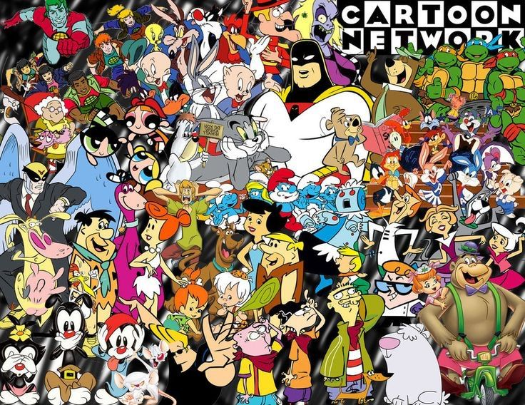

Introducción
Las caricaturas antiguas han dejado una huella imborrable en la historia de la animación. Series como PUCCA, Los Supersónicos y Tom y Jerry marcaron una época y siguen siendo recordadas con cariño.
Estas caricaturas se caracterizan por su estilo único de animación, personajes entrañables y tramas divertidas que han entretenido a generaciones enteras.
Tramas Típicas de Series de Dibujos Animados Antiguas
Muchas de las series antiguas abrieron paso a las tramas de las generaciones futuras, algunos ejemplos de tramas comunes eran las siguientes.
1. La Búsqueda del Tesoro
Los personajes principales se embarcan en una emocionante aventura para encontrar un tesoro perdido, enfrentándose a desafíos y peligros en el camino.
2. La Competencia Amistosa
Los protagonistas participan en una competencia amistosa, ya sea un torneo deportivo, un concurso de talentos o una carrera, donde la camaradería se pone a prueba.
3. El Día en el Parque de Diversiones
Los personajes disfrutan de un día en un parque de diversiones, pero las cosas se complican cuando se enfrentan a largas filas, atracciones desafiantes y travesuras inesperadas.
4. El Misterio por Resolver
Los protagonistas se encuentran en medio de un misterio intrigante que deben resolver, siguiendo pistas, interrogando sospechosos y descubriendo la verdad detrás del enigma.
5. El Plan Malévolo del Villano
El villano de la serie idee un plan malévolo para lograr sus objetivos malignos, y los héroes deben unirse para detenerlo antes de que sea demasiado tarde.

Un ejemplo típico es la serie Scooby Doo, aunque esta siempre repetía los mismos tipos de tramas, al final, cada uno contaba con características distintivas que atrapaban a la audiencia.
Características
Las caricaturas antiguas ofrecen una variedad de características que las hacen inolvidables. Estas incluyen:
- Animación tradicional
- Personajes icónicos
- Historias simples pero entretenidas
- Impacto cultural duradero
Recursos
| Serie | Descripción |
|---|---|
| PUCCA | Una niña que siempre intenta besar a su amor, Garu. |
| Los Supersónicos | Una familia que vive en un futuro con tecnología avanzada. |
| Tom y Jerry | Las aventuras de un gato y un ratón siempre en conflicto. |
| Popeye | Un marinero que obtiene fuerza sobrehumana al comer espinacas. |
| Los Picapiedra | Una familia prehistórica que vive en la ficticia ciudad de Piedradura y enfrenta situaciones cómicas en su vida cotidiana. |
| Scooby-Doo, ¿Dónde Estás? | Un grupo de adolescentes y su perro Scooby-Doo resuelven misterios que involucran supuestos fantasmas y monstruos. |
Si tu curiosidad va más allá, puedes revisar una lista de cartoons antiguos organizados conforme a su rating.
Fragmento de un capítulo de PUCCA
Para conocer mejor como eran las caricaturas antiguas, aquí está un fragmento de un capítulo de PUCCA.